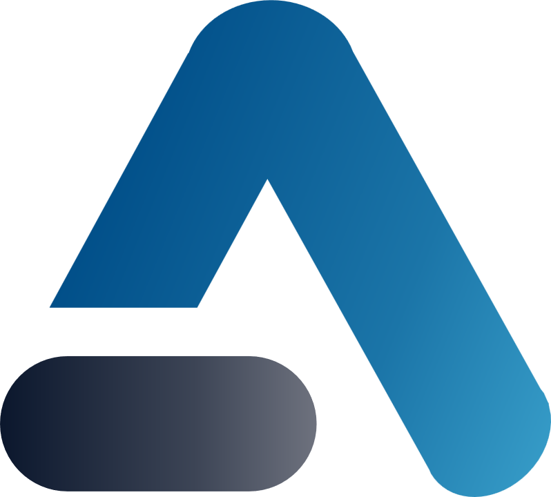

lphalyzer?디지털의 격차가 품질의 격차가 됩니다.
회계사의 전문 지식에 AI 기술을 더해, 데이터 전문가로 도약할 수 있는 발판을 마련합니다.
반복적인 외부 데이터 조회는 RPA가 담당하여 회계사의 판단 시간을 획기적으로 확보합니다.
한국공인회계사회가 직접 개발하고 배포하여 신뢰할 수 있는 공통 인프라를 제공합니다.
수백만 건의 데이터를 멈춤 없이 분석합니다. Excel의 104만 행 제한을 넘어 SAP 원장 등 대규모 데이터를 자유롭게 처리하십시오.
자연어로 질문하면 AI가 Python 코드를 즉시 생성합니다. 데이터 보안을 위한 Local LLM(Gemma) 모드를 완벽하게 지원합니다.
JET, 벤포드 분석, 중복/누락 데이터 탐지 등 실무에서 가장 빈번하게 사용되는 검증 기능을 표준화된 모듈로 제공합니다.
DART 공시 및 휴폐업 조회 자동화는 물론, 모든 분석 이력을 저장하여 감사조서의 재현성을 완벽하게 확보합니다.
| Case Study | Description |
|---|---|
| Journal Entry Test | 공휴일 입력 전표, 마감 직전 집중 입력, 비정상 상대계정 등 위험 요소를 즉시 식별하고 추출하여 감사 위험을 획기적으로 낮춥니다. |
| 매출채권 감사 | 거래처 휴·폐업 여부를 실시간으로 조회할 뿐만 아니라, 장기 미회수 채권 및 비정상 거래처를 데이터 Join 분석을 통해 즉각 식별합니다. |
| 데이터 정합성 검증 | 판매-출고-입금 데이터를 통합 Join 분석하여 3-way Match 기반의 완벽한 검증을 지원하고, 중복 및 누락 데이터를 탐지합니다. |
| AI Prompt | "결산 마감 전 1주일간 발생한 1억 원 이상의 전표 중 상대계정이 현금이 아닌 것을 모두 찾아줘" |
* 실제 업무 데이터를 활용한 분석 시나리오는 활용 가이드에서 더 상세히 확인하실 수 있습니다.
한국공인회계사회 회원이라면 누구나 지금 바로 데이터 기반 업무를 시작할 수 있습니다.
제공 대상
본회 등록 공인회계사 (회비 완납 회원)
신청 방법
본회 홈페이지 로그인 후 신청 및 라이선스 발급
제공 혜택
1년 단위 라이선스 무상 제공 (기간 만료 후 갱신 가능)
실무 사례 중심의 체계적인 교육으로 Alphalyzer 활용 역량을 극대화하십시오.
교육 과정 01
실제 데이터를 활용한 Journal Entry Test 분석 과정
교육 과정 02
AI Assistant 프롬프트 엔지니어링 및 분석 자동화 실습
교육 혜택
교육 이수 시 회원 연수 시간 인정 예정